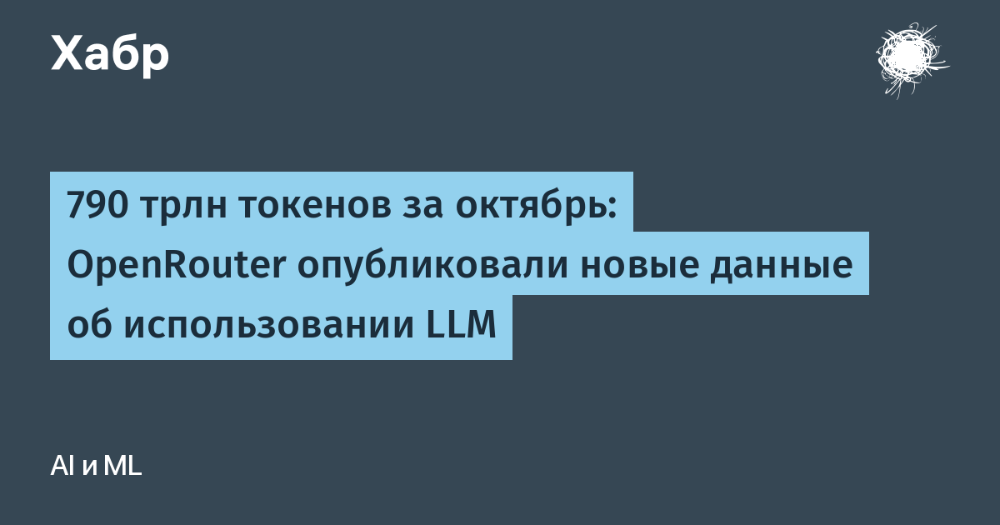

OpenRouter — платформа, дающая доступ к моделям разных компаний через единый API — опубликовала свежую сводку по использованию моделей за январь–октябрь 2026 года. Октябрь стал самым крупным месяцем в её истории: 790 трлн токенов, плюс 37% к сентябрю и почти в 25 раз больше, чем в январе. Основной вклад в рост внесли обновление DeepSeek V4.1 Flash и выход семейства Claude Haiku 5.5.
Каждый API-ключ платформа классифицирует как агентный, человеческий или смешанный — по семи признакам: частота вызова инструментов, число ходов, тайминги запросов и другие. Год назад на агентов приходилось 8% токенов, в октябре — уже 76%, около 600 трлн токенов. Типичная агентная нагрузка — пересылка одного и большого контекста на каждом шаге, поэтому кэширование стало критичным: медианная доля попаданий в кэш выросла с 76,1% в июне до более чем 90% в октябре, а большинство провайдеров отдавали закэшированные префиксы для 85–97% агентных промпт-токенов.
Средняя эффективная цена за миллион токенов с января упала на 57–70%: у закрытых моделей с $1,21 до $0,52, у открытых весов с $0,28 до $0,084 — при этом разрыв между ними вырос с 4,3 до 6,2 раза. Доля открытых весов в платном трафике после запуска Claude Opus 5.5 и GPT-6.1 Sol кратковременно провалилась до 52%, но через две недели вернулась выше 70% — в основном благодаря DeepSeek V4.1 Flash. По расходам открытые веса держат около четверти рынка против 11% в январе. Среди лабораторий быстрее всех растут китайские: с мая токены Z.ai выросли примерно в двадцать раз, DeepSeek — примерно в двенадцать.
Свежая категория «моделей решений» (decision models), которой всего несколько недель, уже получает 21% всех запросов — больше любой модальности, кроме текстовой. По токенам в большинстве задач программирования и агентских задач лидирует DeepSeek V4.1 Flash, а по деньгам доску заказов возглавляет Claude Opus 5.5: дешёвые модели работают, дорогие — берут ответственные шаги.